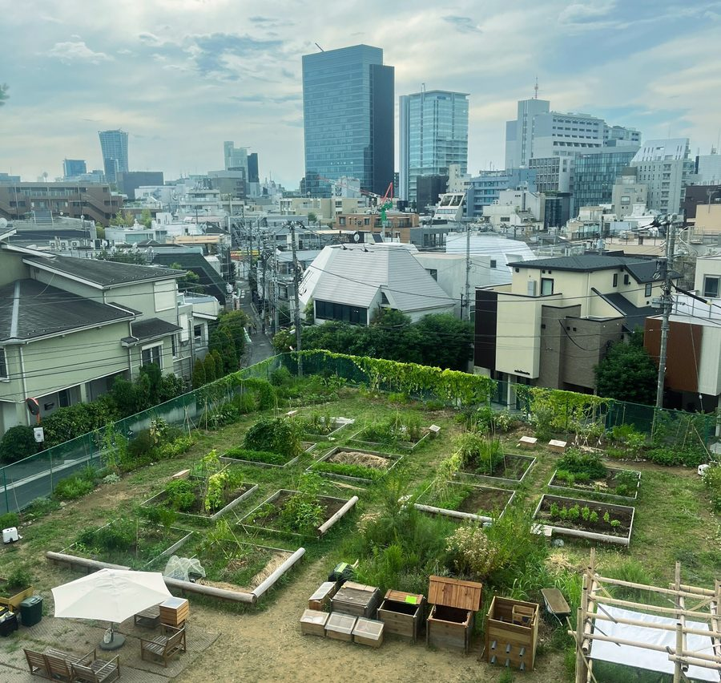

原宿はらっぱファーム
コンポスト東京は、【東京を循環させよう！】のキャッチフレーズを掲げて活動しているNPO法人です。
「⼈と⼈」「⼈と農」そしてまちの繋がりを創造する人材育成カリキュラム作りを進めています。
2025年4月〜は、原宿の国有地を活用した10カ月限定の都市型共創ファーム「原宿はらっぱファーム」で、東京における循環と共創の新しいモデルの社会実験に取り組んでいました。その他、コンポストを身近に感じていただくワークショップや学校連携プロジェクトなども展開しています。

都市型共創ファーム 原宿はらっぱファーム
10か月の実践と学び 〜映像と対話で振り返る〜
📅 5月16日（土）
📍 地球環境パートナーシッププラザ（GEOC）表参道駅徒歩5分
11:00〜13:00 【１部】コミュニティガーデン編
13:30〜15:00 ☕️ フリータイム（無料・自由参加）
15:00〜17:00 【２部】コミュニティコンポスト編
🌱 東京の真ん中の国有地で10か月だけ存在した【原宿はらっぱファーム】愛称 はらはらファーム。
197人のメンバーが集い、52回のイベントを開催。生ごみや落ち葉、雑草は堆肥になり、堆肥は畑に還り、人と人がつながっていきました。
参加者から多く聞かれた言葉は「コミュニティって楽しい！」「近所のつながりができてうれしい！」でした。
はらはらファームが残したものを、映像と対話で一緒に振り返り、これからの都市のコミュニティガーデン、コミュニティコンポストについて、ご一緒に考えませんか？
🎥【１部・２部】では、実践報告の動画を上映しながら、質疑応答と参加者同士の対話の時間をつくります。１部はファーム全体、２部はコミュニティコンポストにテーマを絞って深掘りします。（各回1,000円）
☕️ フリータイムは無料・自由参加。１部と２部の間に、ゆるやかにファームトーク・コンポストトークを楽しめる時間です。散策の途中にふらりと立ち寄ってください。お水・お茶の給水もあります。
📗 ファームでの実践をぎゅっと凝縮したブックレットも当日販売します。新保奈穂美先生（東京大学准教授）の提言も収録（これは絶対読んでほしい！）。EDIBLE TOKYO RALLYに来てくださった方にもぜひ手に取っていただきたい一冊です。A5カラー・60P・2,000円（立ち読み歓迎）
🎫 当日参加も歓迎ですが、事前予約をいただけると確実にご着席いただけます。
https://harahara0516.peatix.com/
定員：20名程度
参加費：各回1,000円（フリータイムは無料）
住所
東京都渋谷区神宮前５丁目５３−７０ 地球環境パートナーシッププラザ（GEOC）1階